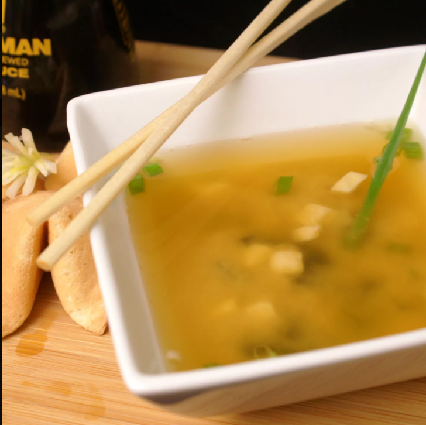

Miso Soup

Description
This miso soup is full of savory flavors. Add more dashi to your soup if you want a stronger stock.
You can use yellow, white, or red miso paste for this soup — yellow miso is sweet and creamy, red miso is stronger and saltier.
Ingredients
- Water
- Dashi Granules
- Miso Paste
- Silken Tofu
- Green Onions
Steps
- Combine water and dashi granules in a medium saucepan over medium-high heat; bring to a boil.
- Reduce heat to medium and whisk in miso paste.
- Stir in tofu.
- Separate the layers of green onions, and add them to the soup.
- Simmer gently for 2 to 3 minutes before serving.